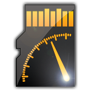
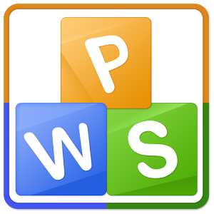

Aplicativos para 2014(){
Dicas
Por: Ari Junior
Aplicativos para 2014
Nada melhor que começar o ano com novas funcionalidades em seu smarthphone. Nessa sessão, trazemos as ferramentas mais utilizadas e mais comentadas no final de 2013 para que você possa aproveitá-las ao máximo em seu aparelho.
99Taxis
99Taxis
99Taxis é um aplicativo gratuito fácil e rápido que simplesmente chama o taxista mais próximo para você. O 99 táxis possui mais de 20 mil taxistas cadastrados e disponibiliza pagamento com cartões de crédito e débito, não cobrando taxas extras do passageiro ou do taxista. Todos os motoristas são cadastrados com fotos e documentos. O serviço está disponível em Manaus, Belém, Fortaleza, Natal, João Pessoal, Recife, Salvador, Belo Horizonte, Rio de Janeiro (e região), Campinas, Maceió, Uberlândia, Brasília, Aracaju, São Paulo (e região), Curitiba, Campo Grande e Porto Alegre.
Link para download
A1 SD Bench

A1 SD Bench
Esta é uma ferramenta gratuita para testes de memória e performance de seu cartão de memória. Essa ferramenta é um poderoso benchmark capaz de avaliar a eficiência de seu cartão MicroSD com 4 diferentes testes, comparar com outros modelos previamente já testados e que ainda pode realizar testes na memória interna e memória RAM de seu smartphone.
Link para download
Truecaller - Bloqueia chamadas
Truecaller - Bloqueia chamadas
Truecaller - bloqueia chamadas - Está cansado de receber chamadas sem identificação que na maioria das vezes não passam de spam?? Esse aplicativo promete acabar com esse problema, pois informa a identificação de quem esta te ligando, descobrir de quem é aquele número que te ligou e ainda dá acesso à uma completa lista de spammers e permite que você bloqueie todas as chamadas spam.
Link para download
TuneIn Radio
TuneIn Radio
TuneIn é um aplicativo que possiu mais de 70.000 rádios e mais de 2 milhões de podcasts e sobre os mais variados temas e assuntos, como música, esportes & futebol, notícias, debate, comédia de qualquer parte do mundo. E o melhor de tudo é que TuneIn Radio é totalmente integrado com o tunein.com, então apenas conecte-se para desfrutar dos seus Favoritos no seu Android
Link para download
Kingsoft Office

Kingsoft Office
Kingsoft Office, como o própio nome já diz, é a ferramenta office para seu smarthphone. Compatível com vários formatos de arquivos, como simples arquivos de texto e arquivos pdf ou até apresentações de power point, Kingsoft Office se torna um aplicativo indispensável para pessoas que utilizam diariamente ferramentas do office. E o melhor de tudo é que ele é gratuito.
Link para download
Referências:
}